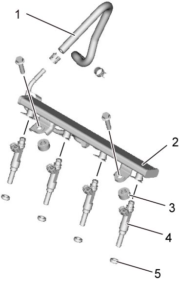
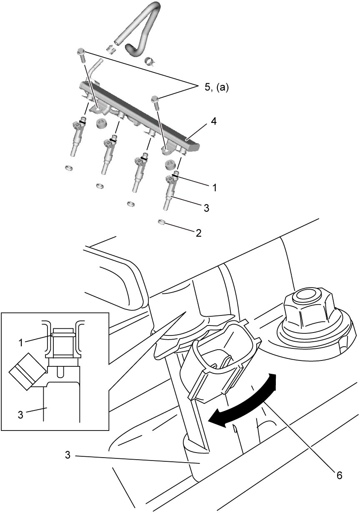

1G
| Fuel Injector Removal and Installation |
Before performing the following procedure, observe Precautions for Fuel System Service:M16A.
Removal
1)Relieve fuel pressure. 
2)Disconnect negative (–) cable at battery.
3)Remove air cleaner assembly.
4)Disconnect fuel injector connectors.
5)Disconnect fuel feed hose (1) from fuel delivery pipe (2).
6)Remove fuel delivery pipe and fuel delivery pipe insulators (3).
7)Remove fuel injector(s) (4) and injector cushion(s) (5).


 "Expand image")
8)Remove injector O-ring from fuel injector.
Installation
NOTICE:
Failure to take the following precautions may affect injector O-ring and cause leakage of high pressure fuel.
•Replace O-ring in clean condition.
•To avoid damaging injector, do not use metal tool for removal of O-ring.
•Check injector groove for cleanliness before fitting O-ring.
•Fit new O-ring with a minimum stretch.
•Do not reuse O-ring once removed.
•After fitting O-ring, check for proper seating and cleanliness.
•To avoid damaging injector, do not use metal tool for removal of O-ring.
•Check injector groove for cleanliness before fitting O-ring.
•Fit new O-ring with a minimum stretch.
•Do not reuse O-ring once removed.
•After fitting O-ring, check for proper seating and cleanliness.
Reverse removal procedure noting the following points.
•Install new injector O-rings (1) and new injector cushions (2), being careful not to damage them.
•Apply thin coat of fuel to injector O-rings, and then install fuel injectors (3) into delivery pipe (4) and cylinder head.
•Tighten fuel delivery pipe bolts (5) to specified torque.
•Check that fuel injectors can be rotated smoothly (6). If not, probable cause is incorrect installation of O-ring. Replace injector O-ring with new one.
•After completing installation, check fuel line connections for leakage with engine not running and ignition “ON”.
•Apply thin coat of fuel to injector O-rings, and then install fuel injectors (3) into delivery pipe (4) and cylinder head.
•Tighten fuel delivery pipe bolts (5) to specified torque.
•Check that fuel injectors can be rotated smoothly (6). If not, probable cause is incorrect installation of O-ring. Replace injector O-ring with new one.

 "Expand image")